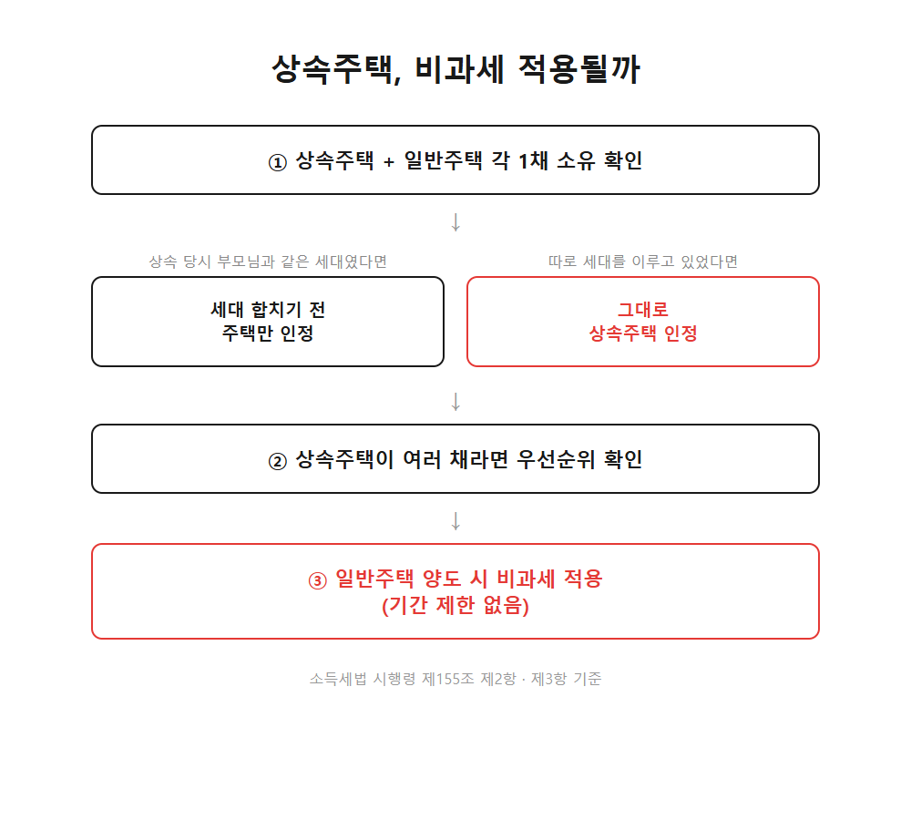
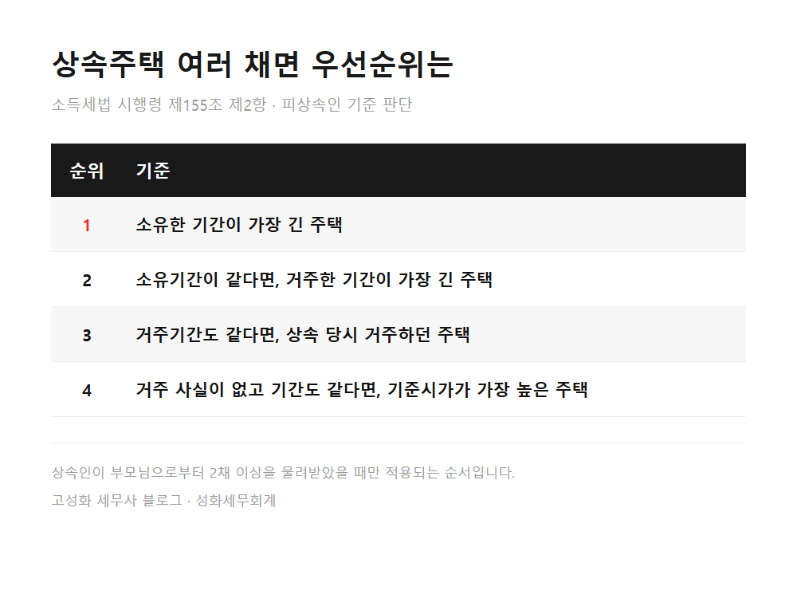
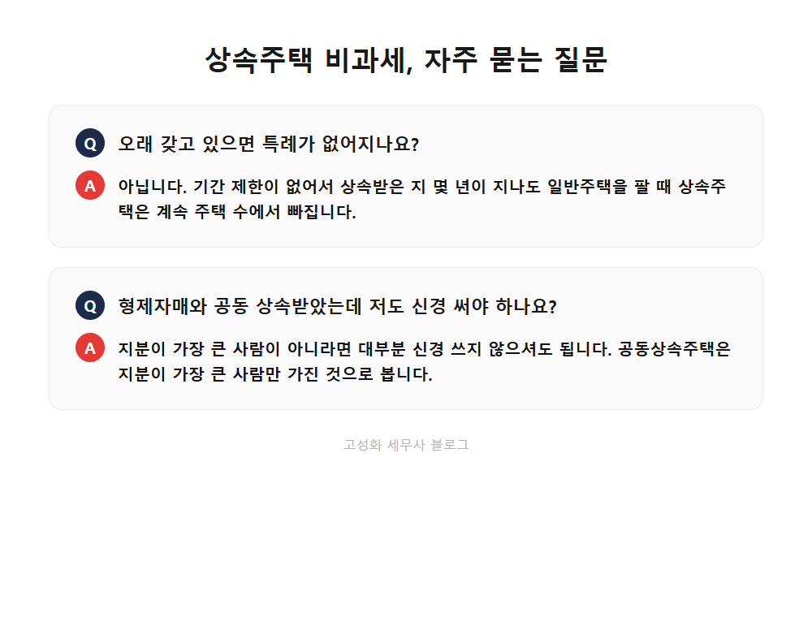

상속주택 있어도 내 집 팔 때 양도세 비과세 될까요

성화세무회계는 세금을 계산해드리기 전에 왜 이런 결과가 나오는지부터 설명해드리는 걸 원칙으로 삼고 있습니다. 오늘 다룰 상속주택 이야기도 계산법보다 원리를 먼저 짚어드리려 합니다.
부모님이 물려주신 지방 주택 한 채가 있는데, 서울에서 살고 있는 본인 집을 팔아야 할 상황이 생기면 머리가 복잡해지실 겁니다. 상속받은 순간부터 갑자기 2주택자가 된 것 같아서요.
이 글을 보고 계신 분은 아마 ① 부모님 명의 주택을 상속받아 본인 집과 함께 2채를 갖게 되신 분, ② 형제자매와 상속주택을 나눠 갖고 계신 분, ③ 지금 살고 있는 집을 곧 팔 계획이 있는 분일 겁니다. 미리 말씀드리면, 상속주택은 대부분 주택 수에서 빠지기 때문에 원래 살던 집을 팔 때 비과세를 그대로 받을 수 있는 경우가 많습니다.
- 상속주택은 왜 주택 수에서 빠질까
- 상속주택이 여러 채라면 어느 것이 인정될까
- 실무에서 자주 놓치는 부분
한눈에 보기



자주 묻는 질문
상속받은 주택을 오래 갖고 있으면 특례가 없어지나요?
아닙니다. 이 특례는 기간 제한이 없어서, 상속받은 지 몇 년이 지나도 일반주택을 팔 때 상속주택은 계속 주택 수에서 빠집니다.
형제자매와 공동으로 상속받았는데 저도 신경 써야 하나요?
지분이 가장 큰 사람이 아니라면 대부분 신경 쓰지 않으셔도 됩니다. 공동상속주택은 지분이 가장 큰 사람만 그 주택을 가진 것으로 보기 때문입니다.
상속주택 덕에 종합부동산세도 똑같이 유리해지나요?
아닙니다. 종합부동산세와 취득세는 양도소득세와 판단 기준이 다르게 적용되므로, 각 세목마다 따로 확인해야 합니다.
정리하면
상속주택과 일반주택을 각각 한 채씩 갖고 계시다면, 원래 살던 집을 팔 때 기간 제한 없이 비과세를 받을 수 있습니다. 다만 상속주택이 여러 채였거나 형제자매와 나눠 가진 경우, 세대를 합친 시점이 애매한 경우라면 순서를 먼저 따져보셔야 합니다.
상담료가 얼마나 나올지 몰라서 문의를 미루시는 분도 계시는데, 이 정도 확인은 통화로도 충분히 가능합니다. 지금 상황에 상속주택이 어떻게 적용되는지 궁금하시면 편하게 문의 주세요.
본문 전체와 근거 조문은 블로그에서 확인하실 수 있습니다.